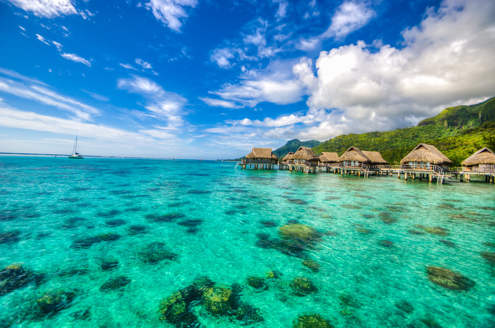
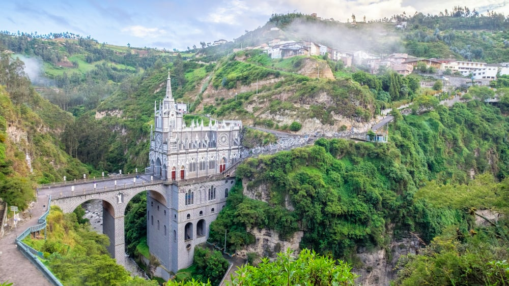

O nosso blog, ajuda você a encontrar sua viagem e ter uma experiência única.
Listamos a baixo 3 continentes com locais diferentes para você escolher a sua viagem!
Certamente, o que mais atrai as pessoas para fazer turismo na Oceania são suas belas paisagens. A junção dos oceanos Pacífico e Índico, no hemisfério sul, juntamente com os povos originários de diversas partes do mundo, formaram lugares paradisíacos e multiculturais.(Oceania)
Seja em uma viagem de férias, lua de mel ou mochilão, a América do Sul não decepciona seus visitantes. Em um mesmo país é possível encontrar belíssimas praias, densas florestas e montanhas cobertas de neve, além de culturas ricas e gastronomias elaboradas, que combinam o melhor das influências europeias e indígenas.(América do Sul)
Com uma área enorme e uma biodiversidade digna de seu tamanho, viagens para a África são muito procuradas pelos safáris — especialmente nos desertos e savanas, os biomas mais lembrados usualmente. Porém, o continente africano vai além dessas atrações.(África)